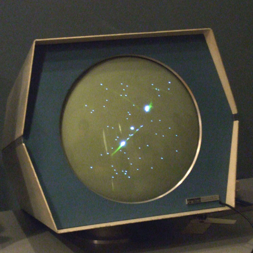
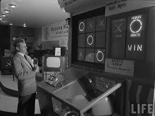
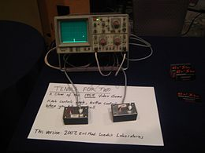
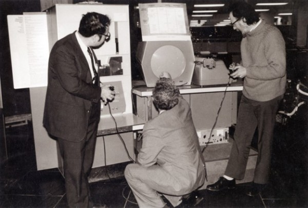

|
A votre avis, quel âge a le premier jeu vidéo?

Le premier jeu interactif connu, le Cathode-ray tube amusement device, fut créé par Thomas T. Goldsmith Jr en 1947. C'est un jeu de tir d'artillerie fonctionnant sur un tube cathodique, resté uniquement à l'état de prototype.
En 1948, Alan Turing crée Turochamp, un programme théorique d'échecs basé sur une recherche heuristique, sans-même posséder d'ordinateur.
Parallèlement en 1947-1948, Donald Michie et Shaun Wylie écrivent également un programme d'échecs intitulé Machiavelli, mais qui restera inachevé.
|
Arthur Samuel reprend les travaux de Christopher Strachey en développant sur IBM 701 un programme de jeu de dames, et l'intelligence artificielle de celui-ci.
On peut aussi noter que les premières simulations militaires sur ordinateurs apparaissent, en particulier créée par RAND Corporation.
La fréquence des nouveautés va lors s'atténuer mais pas leur intérêt. En 1955, l'Operation Research Office ou ORO est un organisme des Etats Unis qui développe Hutspiel, un jeu de simulation de guerre nucléaire sur ordinateur pour 2 joueurs.
En 1957, Logistics Systems Laboratory développe une simulation économique sur IBM 650 intitulée The Top Management Decision Simulation. Puis, en 1958, L'université Carnegie Tech de Pittsburgh développe une simulation économique intitulée The Management Game.
|
À partir de documents sur la simulation de trajectoires de balles, il crée un concept de divertissement, sans utilité académique particulière, à l'aide d'un oscilloscope et d'un ordinateur analogique.
Le jeu reçoit un bon accueil auprès du public local, où des files d'attente se forment pour accéder à la machine, et il est présenté au public deux ans de suite. Malgré l'inventivité du concept pour l'époque, le jeu n'est plus utilisé après 1959, le laboratoire décidant de remplacer cette attraction par une autre aux portes ouvertes suivantes et de réutiliser les pièces pour d'autres recherches.
Il bénéficie à la fois d'un affichage graphique mis à jour en temps réel et un niveau d’interaction entre le joueur et la machine, tels qu'il est le premier jeu à répondre à la définition complète d'un jeu vidéo. Il peut donc être considéré comme le premier vrai jeu vidéo.
|
|
Claude Shannon écrit en 1949 l'article fondateur des programmes d'échecs, intitulé Programming a Computer for Playing Chess. Parallèlement, il construit un automate composé de relais électromécaniques capable de jouer aux échecs. Il se retrouvera de fait à l'aube d'une première grande série d'innovations dans le domaine.
Au début des années 50 , Donald Davies (un scientifique du National Physical Laboratory ou NPL), écrit l'article « A Theory of Chess and Noughts and Crosses » traitant du jeu entre un humain et un ordinateur, paru dans le périodique Penguin Science News. Cet article inspirera notamment Christopher Strachey et probablement Dietrich Prinz.

La même année, Josef Kates conçoit Bertie the Brain, un ordinateur permettant de jouer au tic-tac-toe, présenté à l'occasion de l'Exposition nationale canadienne de 1950.
|
La Genèse du Jeu Vidéo

|

Pendant ce temps, au Massachusetts Institute of Technology ou MIT, plusieurs étudiants et employés en particulier de l'association de hacker TMRC, développent sur l'ordinateur expérimental TX-0 des jeux visuels interactifs nommé Tic-Tac-Toe et Mouse in the Maze.
Puis sur 1961 et 1962, Steve Russell avec la collaboration de nombreux membres du TMRC développe le jeu Spacewar! sur le tout nouveau PDP-1 qui vient d'être installé au MIT. C'est le premier jeu largement diffusé au-delà du seul ordinateur sur lequel il a été conçu et dans le seul centre de recherche où il a été développé. Le public reste toutefois principalement universitaire.
C'est aussi en 1962 que l'armée américaine réalise une série de simulations de guerre notables nommées Sigma.
Plus tard, en 1965, John Kemeny développe Baseball en langage de programmation BASIC qu'il a récemment inventé avec Thomas Kurtz. Ce même langage sera utilsé en 1966 par Larry Bethurum pour créer un jeu de bingo.
|
|
Puis John Bennett développe le Nimrod, un ordinateur permettant de jouer au jeu de Nim, présenté lors du Festival of Britain de 1951, puis à la Society of Engineers de Toronto.
La même année, Dietrich Prinz crée son programme d'échecs sur le Ferranti Mark I de l'université de Manchester, premier ordinateur à usage commercial. Limité par les capacités matérielles de la plate-forme, il ne peut que résoudre les finales mats en deux coups. C'est cependant le premier programme d'échecs de l'histoire à fonctionner réellement et jouer contre un humain.
1952 fut encore plus riche en avancées. Alexander S. Douglas crée OXO, un jeu de tic-tac-toe fonctionnant sur l'EDSAC, le premier jeu à utiliser un affichage électronique.
Christopher Strachey crée son programme de jeu de dames sur l'ordinateur Ferranti Mark I de l'université de Manchester. C'est l'un des premiers à faire fonctionner une intelligence artificielle et une méthode de recherche heuristique. En outre, il est l'un des premiers jeux à utiliser un affichage graphique.
|
Tennis for Two est un jeu vidéo de tennis conçu en 1958 par William Higinbotham et développé par Robert Dvorak, souvent considéré comme le premier jeu vidéo de l'histoire. Le jeu est développé sur un ordinateur analogique Donner Model 30 dédié et relié à un oscilloscope qui sert d'écran.
Le concept est présenté en 1958 et 1959 lors des portes ouvertes du laboratoire national de Brookhaven. Le jeu, développé en quelques semaines, a pour but de montrer les avancées technologiques au grand public, à l'occasion des portes ouvertes du laboratoire. En période de guerre froide, Higinbotham souhaite montrer une image plus sympathique du monde de la recherche, alors que les esprits sont encore marqués par les premiers essais nucléaires des années 1950.
|
Les choses évoluent aussi du côté matériel car en 1966 à 1968, Ralph Baer réalise les croquis et prototypes de la Brown Box, qui deviendra la première console de jeux vidéo : l'Odissey.
Dans les derniers faits d'armes de ces pionniers vidéoludiques, on notera la programmation de Hamurabi en FOCAL par Doug Dyment en 1968, un jeu en mode texte, porté en BASIC par David H. Ahl en 1969. Le jeu est considéré comme l'un des premiers jeux vidéo de stratégie.
Enfin, en 1969, Ken Thompson développe Space Travel pour le système d'exploitation Multics qui conduit en partie au développement du système d'exploitation Unix.
|